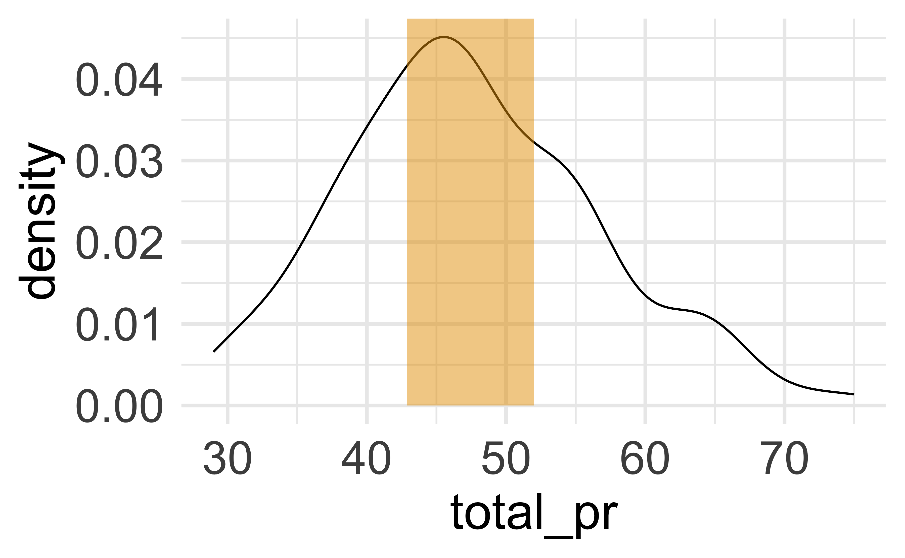

8 Modellgüte
8.1 Lernsteuerung
8.1.1 Standort im Lernpfad
Abbildung 1.2 zeigt den Standort dieses Kapitels im Lernpfad und gibt damit einen Überblick über das Thema dieses Kapitels im Kontext aller Kapitel.
8.1.2 Lernziele
- Sie kennen gängige Maße der Streuung einer Stichprobe und können diese definieren und mit Beispielen erläutern.
- Sie können gängige Maße der Streuung einer Stichprobe mit R berechnen.
- Sie können die Bedeutung von Streuung für die Güte eines Modells erläutern.
8.1.3 Benötigte R-Pakete
In diesem Kapitel benötigen Sie folgende R-Pakete.
8.1.4 Benötigte Daten
mariokart <- read.csv("https://vincentarelbundock.github.io/Rdatasets/csv/openintro/mariokart.csv")8.2 Prof. Weiss-Ois hat eine Idee
8.2.1 Was er sagt

8.2.2 Was er NICHT sagt
Icon unter Flaticon licence, Autor: iconixar
Würden Sie die Pille von Prof. Weiss-Ois nehmen?
- ja
- nein
- Nur wenn ich 100 Euro bekomme
- Okay, für 1000 Euro$
Wie sehr die Werte eines Modells streuen, ist eine wichtige Information.\(\square\)
8.3 Woran erkennt man ein gutes Modell?
Abbildung 8.1 zeigt ein einfaches Modell (Mittelwert) mit wenig Streuung (links) vs. ein einfaches Modell mit viel Streuung (rechts).

Bei einem Modell mit wenig Streuung liegen die tatsächlichen, beobachtete Werte (\(y\)) nah an den Modellwerten (vorhergesagten Werten, \(\hat{y}\)); die Abweichungen \(e = y - \hat{y}\) sind also gering (der Modellfehler ist klein). Bei einem Modell mit viel Streuung ist der Modellfehler \(e\) (im Vergleich dazu) groß.
Beispiel 8.1 (Daten zur Schlankheitskur von Prof. Weiss-Ois) In Abbildung 8.1 sind die Daten zu der Gewichtsveränderung nach Einnahme von “Schlankheitspillen†zweier verschiedener Präparate. Wie man sieht unterscheidet sich die typische (vorhergersagte) Gewichtsveränderung zwischen den beiden Präparaten kaum. Die Streuung allerdings schon. Links sieht man die Gewichtsveränderungen nach Einnahme des Präparats “Dickableibtin extra mild†(c) und rechts das Präparat von Prof. Weiss-Ois “Pfundafliptan Forteâ€. Welches Präparat würden Sie lieber einnehmen?\(\square\)
Wir wollen ein präzises Modell, also kurze Fehlerbalken: Das Modell soll die Daten gut erklären, also wenig vom tatsächlichen Wert abweichen. Jedes Modell sollte Informationen über die Präzision des Modellwerts bzw. der Modellwerte (Vorhersagen) angeben. Ein Modell ohne Angaben der Modellgüte, d.h. der Präzision der Schätzung des Modellwerts, ist wenig nütze.\(\square\)
👩‍🎓 Ich frage mich, ob man so ein Modell nicht verbessern kann?
👩‍🏫 Die Frage ist, was wir mit “verbessern†meinen?
👩‍🎓 Naja, kürzere Fehlerbalken, ist doch klar!
Da die Anzahl der Lenkräder mit dem Verkaufsgebot zusammenhängt, könnte es vielleicht sein, dass wir die Lenkräder-Anzahl da irgendwie nutzen könnten. Das sollten wir ausprobieren.
Abbildung 8.2 zeigt, dass die Fehlerbalken kürzer werden, wenn wir ein (sinnvolles) komplexeres Modell finden. Innerhalb jeder der beiden Gruppen (mit 2 Lenkrädern vs. mit 0 Lenkrädern) sind die Fehlerbalken jeweils im Durchschnitt kürzer (rechtes Teildiagramm) als im Modell ohne Gruppierung (linkes Teildaigramm).1


Durch sinnvolle, komplexere Modelle sinkt die Fehlerstreuung eines Modells.\(\square\)
8.4 Streuungsmaße
8.4.1 Der mittlere Abweichungsbalken
🧑‍🎓 Wir müssen jetzt mal präziser werden! Wie können wir die Streuung berechnen?
👨‍🏫 Gute Frage! Am einfachsten ist es, wenn wir die mittlere Länge eines Abweichungsbalkens ausrechnen.
Legen wir (gedanklich) alle Abweichungsbalken \(e\) aneinander und teilen durch die Anzahl \(n\) der Balken, so erhalten wir wir den “mittleren Abweichungsbalkenâ€, den wir mit \(\varnothing e\) bezeichnen könnten. Diesen Kennwert bezeichnet man als Mean Absolute Error (MAE) bzw. als Mittlere Absolutabweichung (MAA). Er ist so definiert:
\({\displaystyle \mathrm {MAE} ={\frac {\sum _{i=1}^{n}\left|y_{i}-\bar{y}\right|}{n}}={\frac {\sum _{i=1}^{n}\left|e_{i}\right|}{n}}.}\)
Definition 8.1 (Mittlere Absolutabweichung) Die Mittlere Absolutabweichung (MAA, MAE) ist definiert als die Summe der Absolutwerte der Differenzen eines Messwerts zum Mittelwert, geteilt durch die Anzahl der Messwerte.2\(\square\)
Beispiel 8.2 Abbildung 8.3 visualisiert ein einfaches Beispiel zum MAE. Rechnen wir den MAE für das Beispiel von Abbildung 8.3 aus:
\(MAE = \frac{1 + |- 3| + 1 + 1}{4} = 6/4 = 1.5\)

Natürlich können wir R auch die Rechenarbeit überlassen.
🤖 Loving it!!
Schauen Sie: Den Mittelwert (s. Abbildung 8.3) kann man doch mit Fug und Recht als ein lineares Modell, eine Gerade, betrachten, oder nicht? Schließlich erklären wir \(y\) anhand einer Gerade (die parallel zur X-Achse ist).
In R gibt es einen Befehl für ein lineares Modell, er heißt lm.
Die Syntax von lm() lautet:
lm(y ~ 1, data = meine_daten).
In Worten:
Hey R, berechne mit ein lineares Modell zur Erklärung von Y. Aber verwende keine andere Variable zur Erklärung von Y, sondern nimm den Mittelwert von Y.
lm1 <- lm(y ~ 1, data = d)Den MAE können wir uns jetzt so ausgeben lassen:
mae(lm1)
## [1] 1.58.4.2 Der Interquartilsabstand
Der Interquartilsabstand (engl. inter quartile range, IQR) ist ein Streuungsmaß, das nicht auf dem Mittelwert aufbaut. Der IQR ist robuster als z.B. der MAA oder die Varianz und die Standardabweichung.
:::{#def-iqr} ### Interquartilsabstand Der Interquartilsabstand (IRR) ist definiert als der die Differenz vom 3. Quartil und 1. Quartil.\(\square\)
Beispiel 8.3 (IQR im Hörsaal) In einem Statistikkurs betragen die Quartile der Körpergröße: Q1: 1.65m, Q2 (Median): 1,70m, Q3: 1.75m. Der IQR beträgt dann: \(IQR = Q3-Q1 = 1.75m - 1.65m = 0.10m\), d.h. 10 cm.\(\square\)
8.4.3 Der mittlere Quadratfehler
Sagen wir, wir möchten die Körpergröße erwachsener (deutscher) Männer modellieren. Einfach gesagt: Wir möchten wissen, wie groß typischerweise ein deutscher Mann ist. Wir verwenden den Mittelwert, um diese Frage zu beantworten. Aus der Literatur erfahren wir, dass die mittlere Körpergröße belgischer Männer bei 179 cm liegt und normalverteilt ist (Garcia und Quintana-Domeque 2007).3
Sind Ihre Daten normalverteilt, dann sind die Abweichungen vom Mittelwert auch normalverteilt. Denn wenn man eine Konstante zu einer Verteilung addiert, “verschiebt man den Berg†ja nur zur Seite, ohne seine Form zu verändern, s. Abbildung 8.4.

Hat man normalverteilte Residuen, so ist die Standardabweichung (engl. standard deviation, SD, \(\sigma\), \(s\)) eine komfortable Maßeinheit der Streuung, denn damit lässt sich die Streuung (Abweichung vom Mittelwert, Residuen) der Normalverteilung gut beschreiben.
Normalverteilte Residuen lassen sich gut mit der Standardabweichung beschreiben.\(\square\)
🧑‍🎓 Aber wie berechnet man jetzt diese Standardabweichung?
👨‍🏫 Moment, noch ein kurzer Exkurs zur Varianz …
🧑‍🎓 (seufzt)
8.4.4 Varianz
Um die Standardabweichung zu berechnen, berechnet man zunächst die Varianz, \(s^2\) abgekürzt. Hier ist ein “Kochrezeptâ€4 zur Berechnung der Varianz:
- Für alle Datenpunkte \(x_i\): Berechne die Abweichungen vom Mittelwert, \(\bar{x}\)
- Quadriere diese Werte
- Summiere dann auf
- Teile durch die Anzahl \(N\) der Werte
Als Formel ausgedrückt, lautet die Definition der Varianz5 einer Stichprobe:
\[{\displaystyle s^{2}={\frac {1}{N}}\sum _{i=1}^{N}\left(x_{i}-{\bar {y}}\right)^{2}.}\]
Definition 8.2 (Varianz) Die Varianz (\(s^2, \sigma^2\)) ist definiert als der Mittelwert der quadradrierten Abweichungen (vom Mittelwert).\(\square\)
Die Varianz steht im engen Verhältnis zur Kovarianz, s. Kapitel 9.3.
Die Varianz kann auch verstehen als den mittleren Quadratfehler (Mean Squared Error, MSE) eines Modells. Im Fall eines Punktmodells ist der Mittelwert der vorhergesagte Wert eines Modells.
\[{\displaystyle MSE={\frac {1}{N}}\sum _{i=1}^{N}\left(x_{i}-{\hat {y}}\right)^{2}.}\]
Abbildung 8.7 illustriert die Varianz:
- Man gehe von der Häufigkeitverteilung der Daten aus.
- Betrachtet man die Daten als Gewichte auf einer Wippe, so ist der Schwerpunkt der Wippe der Mittelwert.
- Man bilde Quadrate für jeden Datenpunkt mit der Kantenlänge, die dem Abstand des Punktes zum Mittelwert entspricht.
- Die Quadrate quetscht man jetzt wo nötig in rechteckige Formen (ohne dass sich die Fläche ändern darf) und verschiebt sie, bis sich alle Formen zu einem Rechteck mit Seitenlänge \(n\) und \(\sigma^2\) anordnen.
Abbildung 8.6 visualisiert die Varianz für Beispiel 8.2.6

Bildquelle: FOM-ifes
Beispiel 8.4 Sie arbeiten immer noch bei einem Online-Auktionshaus und untersuchen den Verkauf von Videospielen. Natürlich mit dem Ziel, dass Ihre Firma mehr von dem Zeug verkaufen kann.
Zunächst betrachten Sie die Streuung in den Verkaufspreisen:
library(easystats) # Das Paket muss installiert sein
mariokart <- data_read("https://vincentarelbundock.github.io/Rdatasets/csv/openintro/mariokart.csv")
m <-
mariokart %>%
filter(total_pr < 100) # ohne Extremwerte
m_summ <-
m %>%
summarise(
pr_mw = mean(total_pr),
pr_iqr = IQR(total_pr),
pr_maa = mean(abs(total_pr - mean(total_pr))),
pr_var = var(total_pr),
pr_sd = sd(total_pr))
m_summStatistiken sind ja schön … aber Bilder sind auch gut, s. Abbildung 8.7.


\(\square\)
Wer sich die Berechnung von Hand für pr_maa sparen möchte, kann die Funktion MeanAD aus dem Paket DescTools nutzen.
8.4.5 Die Standardabweichung
Kennt man die Varianz, so lässt sich die Standardabweichung einfach als Quadratwurzel der Varianz berechnen.
Definition 8.3 (Standardabweichung) Die Standardabweichung (SD, s, \(\sigma\)) ist definiert als die Quadratwurzel der Varianz.
\[s := \sqrt{s^2}\]
\(\square\)
Durch das Wurzelziehen besitzt die Standardabweichung wieder in etwa die gleiche Größenordnung wie die Daten (im Gegensatz zur Varianz, die durch das Quadrieren sehr groß werden kann).
Aus einem Modellierungsblickwinkel kann man die SD definieren als die Wurzel von MSE. Dann nennt man sie Root Mean Squared Error (RMSE): \(rmse = \sqrt{mse}\).
Die SD ist i.d.R. ungleich zur MAE.\(\square\)
Beispiel 8.5 Sie arbeiten weiter an Ihrem Mariokart-Projekt. Da Sie heute keine Lust auf viel Tippen haben, nutzen Sie das R-Paket easystats mit der Funktion describe_distribution.
Ah! Das war einfach. Wird auch langsam Zeit für Feierabend.\(\square\)
Beispiel 8.6 Ihr Job als Datenanalyst ist anstrengend, aber auch mitunter interessant. So auch heute. Bevor Sie nach Hause gehen, möchten Sie noch eine Sache anschauen. In einer früheren Analyse (s. Abbildung 8.2) fanden Sie heraus, dass die Fehlerbalken kürzer werden, wenn man ein geschickteres und komplexeres Modell findet.
Das wollen Sie natürlich prüfen. Sie überlegen: “Okay, ich will ein einfaches Modell, in dem der Mittelwert das Modell des Verkaufpreis sein soll.â€
Das spezifizieren Sie so:
lm1 <- lm(total_pr ~ 1, data = mariokart)
mae(lm1)
## [1] 10.01811Im nächsten Schritt spezifizieren Sie ein Modell, in dem der Verkaufpreis eine Funktion der Anzahl der Lenkräder ist (ähnlich wie in Abbildung 8.2):
lm2 <- lm(total_pr ~ wheels, data = mariokart)
mae(lm2)
## [1] 7.375873Ah! Sehr schön, Sie haben mit lm2 ein besseres Modell als einfach nur den Mittelwert gefunden. Ab nach hause!\(\square\)
8.5 Streuung als Modellfehler
Wenn wir den Mittelwert als Punktmodell des Verkaufpreises auffassen, so kann man die verschiedenen Kennwerte der Streuung als verschiedene Kennwerte der Modellgüte auffassen.
Definieren wir zunächst als Punktmodell auf Errisch:
lm_mario1 <- lm(total_pr ~ 1, data = m)Zur Erinnerung: Wir modellieren total_pr ohne Prädiktoren, sondern als Punktmodell, und zwar schätzen wir den Mittelwert mit den Daten m.
Das (Meta-)Paket easystats bietet komfortable Befehle, um die Modellgüte zu berechnen:
mae(lm_mario1) # Mean absolute error
## [1] 7.199762
mse(lm_mario1) # Mean squared error
## [1] 82.46957
rmse(lm_mario1) # Root mean squared error
## [1] 9.0812768.6 Fazit
Der â€gesunde Menschenverstand“ würde spontan den mittleren Absolutabstand (MAA oder MAE) der Varianz (oder der Standardabweichung, SD) vorziehen. Das ist vernünftig, denn die MAA ist anschaulicher und damit nützlicher als die Varianz und die SD.
Warum sollte man überhaupt ein unanschauliches Maß wie die Varianz verwenden? Wenn es nur um deskriptive Statistik geht, braucht man die Varianz (oder die SD) nicht unbedingt.
Gründe, warum Sie die Varianz (bzw. SD) kennen und nutzen sollten, sind:7
- Die SD ist sehr nützlich zur Beschreibung der Normalverteilung
- Die Varianz wird häufig verwendet bzw. in Forschungsarbeiten berichtet, also müssen Sie die Varianz kennen.
Liegen Exremwerte vor, kann es vorteilhafter sein, den IQR vorzuziehen gegenüber Mittelwert basierten Streuungsmaßen (MAA, Varianz, SD).
8.7 Aufgaben
Schauen Sie sich auch mal auf Datenwerk die Aufgaben zu dem Tag variability an.
8.8 Literatur
Aus Gründen der Übersichtlichkeit wurden nur Autos mit Verkaufsgebot von weniger als 100 Euros berücksichtigt und nur Spiele mit 0 oder mit 2 Lenkrädern.↩︎
Wenn man solche Sätze liest, fühlt sich die Formel fast einfacher an.↩︎
Das sind Daten für Belgien; Daten zur Standardabweichung für Deutschland habe ich nicht gefunden.↩︎
Algorithmus↩︎
sog. unkorrigierte Stichprobenvarianz↩︎
Die Abweichungsquadrate wirken optischt nicht quadratisch, da die X-Achse breiter skaliert dargestellt ist als die Y-Achse. Trotzdem sind es Quadrate, nur nicht optisch, wenn Sie wissen, was ich meine…↩ï¸
Ich wollte noch hinzufügen, dass die Varianz eng verknüpft mit der linearen Algebra, aber ich war nicht sicher, ob das Argument allgemein überzeugen würde.↩︎